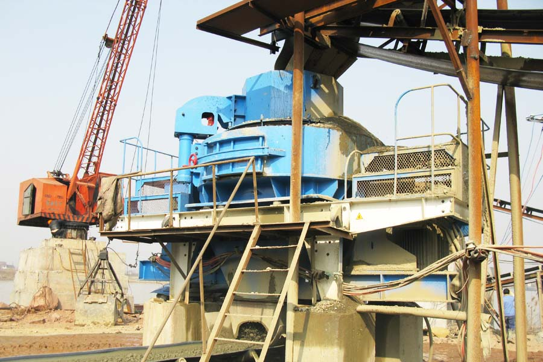

Construction waste crushing production line

Mobile construction waste crushing station for urban construction waste crushing.
quartz sand machine manufacturers
quartz sand machine manufacturers
Quartz is an important building decoration materials, along with the development of production, its surface will be more widely applied. Quartz from natural materials to meet the needs of middle to go through multi-channel processing step, while quartz sand is an important working tool, mainly quartz stone crushing shaping. About quartz sand, problems users are most concerned about is performance, manufacturers, prices, in fact, as long as these problems are resolved well, you can buy a satisfied device, but the fact is that to solve these problems is not a simple thing.

Sand production line of quartz stone manufacturers on the market too much, for the user, if not understand the market, difficult to choose the manufacturers, some users may find the purchase of large brand manufacturers of equipment must be right, these plants Production equipment should be trusted, but what is not absolute, and major manufacturers of equipment can not speak of the quality of trust, but the price will be high, an important reason for this is that many users hesitant in the face of the brand manufacturer.
CAG specializing in the production of mining equipment for nearly three decades, can not be said to be a leader within the industry, we just do better, the company's mining equipment is definitely worth the user trust the brand, and the company now is the largest mining equipment important exporter, users throughout more than thirty many foreign countries, such as Indonesia, the Philippines, South Africa, Australia and other countries, have perennial cooperation with our company's users. Production structure of the company producing quartz sand has a more stable, low failure rate, energy-saving effect, has passed the ISO9001 international quality system certification, quality is guaranteed.
About quartz sand prices, because each manufacturer has its own pricing strategy, so in order to understand the specific pricing information, the need to consult the specific manufacturer before that, users interested in a company's equipment, available online contact our customer service personnel, because we produce quartz sand There are many models, different models at different prices, the Advisory Service can get specific model of price, performance information!
Leave Me A Message, Now
If you have any questions regarding equipment prices, production line configuration or other problems, you can send a message to us, we will contact you soon.